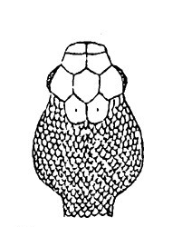
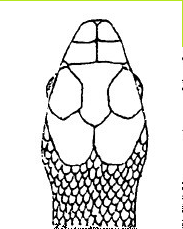

This web-page was designed to help identify snakes of Virginia. In order to tell the differnce between venomous and non-venomous snakes. If you find a snake in Virginia and want to know what kind it is, follow the instructions below.
|  |
Arrow-shaped head |
|  |
Round head |